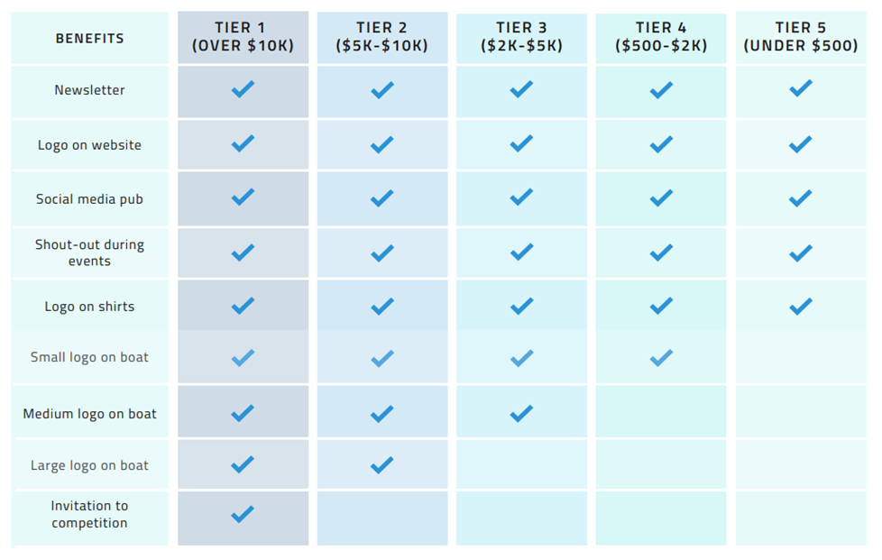

<!-- Sorry in advance for just copying and pasting the navbar, stack overflow didnt give me a better solution -->
<!DOCTYPE html>
<link rel="stylesheet" type="text/css" href="aboutus.css" >
<html lang="en">
    <head>
 
        <title>Sponsors Page</title>
        <meta charset="utf-8">
        <meta name="viewport" content="width=device-width, initial-scale=1">
        <link rel="stylesheet" href="https://cdn.jsdelivr.net/npm/bootstrap@4.5.3/dist/css/bootstrap.min.css" integrity="sha384-TX8t27EcRE3e/ihU7zmQxVncDAy5uIKz4rEkgIXeMed4M0jlfIDPvg6uqKI2xXr2" crossorigin="anonymous">
    
    </head>
    <body class="includebackground">
		<script src="https://code.jquery.com/jquery-3.5.1.min.js" integrity="sha256-9/aliU8dGd2tb6OSsuzixeV4y/faTqgFtohetphbbj0=" crossorigin="anonymous"></script>
        <script src="https://cdn.jsdelivr.net/npm/bootstrap@4.5.3/dist/js/bootstrap.min.js" integrity="sha384-w1Q4orYjBQndcko6MimVbzY0tgp4pWB4lZ7lr30WKz0vr/aWKhXdBNmNb5D92v7s" crossorigin="anonymous"></script>
    </body>
    
</html>
<nav id="nav" class="navbar navbar-expand-md">
	<a class="navbar-brand" href="index.html">Arcturus</a>
	<button class="navbar-toggler navbar-dark" type="button" data-toggle="collapse" data-target="#main-navigation">
		<span class="navbar-toggler-icon"></span>
	</button>
	<div class="collapse navbar-collapse" id="main-navigation">
		<ul class="navbar-nav">
			<li class="nav-item">
				<a class="nav-link" href="index.html">Home</a>
			</li>
			<li class="nav-item">
				<a class="nav-link" href="about.html">Team Members</a>
			</li>
            <li class="nav-item">
				<a class="nav-link" href="aboutus.html">About Us</a>
			</li>
			<li class="nav-item">
				<a class="nav-link" href="sponsors.html">Sponsors</a>
			</li>
			<!-- <li class="nav-item">
				<a class="nav-link" href="contacttemp.html">Contact</a>
			</li> -->
		</ul>
	</div>
</nav>

<div class="container">

    <h1 class="topic"> What is Arcturus? </h1>
    <p class="paragraph"> Arcturus is a RoboBoat team representing the Massachusetts Institute of Technology. We are the newest Edgerton Center team, and 2022 will be our 
        first year of competition! RoboBoat is an annual international competition where students design and build a small Autonomous Surface Vehicle 
        (ASV) to complete a variety of tasks that mimic real-world challenges facing the maritime industry. The competition also tasks us with raising 
        team funds, documenting our progress, and organizing outreach. In this way, we hope to take what we learn and give back to our community. </p>
    
    <h1 class="topic">What is RoboBoat? </h1>
    <p class="paragraph">
        RoboBoat is an annual international competition where undergraduate students design and build a small Autonomous Surface Vehicle (ASV) to
        complete a variety of tasks that mimic real-world challenges facing the maritime industry. The competition will be held in Sarasota, Florida 
        from June 20th to 26th 2022. If you’d like to learn more about the Roboboat competition, please visit <a href = "https://roboboat.org" target = "_blank"> RoboBoat</a>. 
    </p>

    <h1 class="topic">What we do </h1>
    <p class="paragraph">    
        Learning about dynamics and controls in class is one thing, but working together and actually seeing your ideas come to life is something else.
        This season, our boat will need to autonomously navigate a course, spray water at a target, and launch balls up a ramp. Arcturus provides an 
        incredible opportunity for students to learn the fundamentals of applied engineering, including computer aided design, finite element analysis, 
        laser cutting, drilling, milling, rapid prototyping, and programming. It is very important to us that students understand how their work relates 
        to the entire system, and that each subteam learns to clearly communicate their technical progress, since those are key skills for engineers. 
        These kinds of skills would be very difficult to learn or teach in a classroom environment, so we believe this will be an incredibly enriching 
        and rewarding experience for our members. 
    </p>

    <h1 class="topic"> Sponsorship </h1>
    <p class="paragraph">
        We are actively seeking donations ranging from $500 to $10,000 and beyond, with greater donations bringing greater benefits. 
        Donations are tax deductible.
    </p>
    <p class="paragraph"> We are also looking for</p>
    <p class="paragraph"> •	Parts or professional services</p>
    <p class="paragraph"> •	Stock materials such as aluminum or plastics </p>
    <p class="paragraph"> •	Use of industrial tools </p>
    <p class="paragraph"> •	Professional advice</p>
    <p class="paragraph"></p>
    <p class="paragraph"> If you are interested in supporting the team, please reach out at arcturus-donations@mit.edu to learn more! 
    Or if you're interested in making a charitable donation to the team as an individual, please visit 
        <a href = "https://giving.mit.edu/form/#/" target = "_blank"> this link </a> 
    to make a gift.
    </p>
    <p class="paragraph"> 
        
    </p>
   
   
   
<div>
    
</div>
</div>